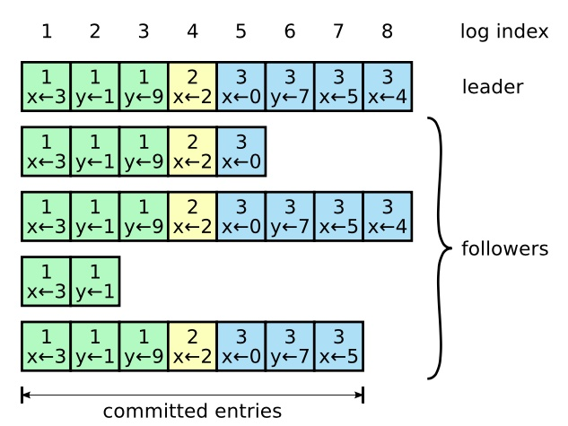

Raft
Raft是一种分布式一致性算法。
Raft的工作方式是在集群中选举一个领导者。领导者负责接受客户端请求并管理到其他服务器的日志复制。数据只在一个方向流动:从领导者到其他服务器。
Raft将一致性问题分解为三个子问题:
-
领导者选举: 现有领导者失效时，需要选举新的领导者；
-
日志复制: 领导者需要通过复制保持所有服务器的日志与自己的同步；
-
安全性: 如果其中一个服务器在特定索引上提交了日志条目，那么其他服务器不能在该索引应用不同的日志条目。
工作原理概述
follower：所有结点都以follower的状态开始。如果没收到leader消息则会变成candidate状态。
candidate：会向其他结点“拉选票”，如果得到大部分的票则成为leader。这个过程就叫做Leader选举(Leader Election)。
leader：所有对系统的修改都会先经过leader。每个修改都会写一条日志(log entry)。leader收到修改请求执行日志复制(Log Replication)。
执行复制日志到所有follower结点(replicate entry)
大部分节点复制完成后，leader执行日志提交，索引index++
通知所有follower节点日志已提交，应用索引
所有follower也提交日志
现在整个系统处于一致的状态
全局只有两种请求 leader发出的Append Entries，心跳与日志都是通过它进行发送的。 candidate发出的vote
选举
每一个服务器节点都处于这三个状态之一：
-
Follower:追随者，跟随者都是被动的：他们不会发送任何请求，只是简单的响应来自领导者或者候选人的请求；
-
Candidate:候选人，如果跟随者接收不到消息，那么他就会变成候选人并发起一次选举，获得集群中大多数选票的候选人将成为领导者。
-
Leader:领导者，系统中只有一个领导人并且其他的节点全部都是跟随者，领导人处理所有的客户端请求（如果一个客户端和跟随者联系，那么跟随者会把请求重定向给领导人）
任期
每个任期都以一次选举开始，任期号单调递增。每个服务器存储当前任期号，并在每次通信中交换该任期编号。
如果一个服务器的当前任期号小于其他服务器，那么它将把当前任期更新为更大的值。如果候选人或领导者发现其任期已过期，则立即转化为追随者状态。如果服务器接收到带有过期任期号的请求，它将拒绝该请求。
leader选举
领导者定期向跟随者发送心跳，来维持自己的leader角色。如果跟随者在一定的时间内——选举超时时间——election timeout（为了避免选举冲突，这个超时时间是一个150~300ms之间的随机数，每个节点每次超时时间不固定）没有接收到leader的心跳消息（通过AppendEntries这个消息结构来传递），也就是选举超时，那么他就会认为系统中没有可用的领导者,并且发起选举以选出新的领导者。
要开始一次选举过程，跟随者先要增加自己的当前任期号并且转换到候选人状态。然后他会并行的向集群中的其他服务器节点发送请求投票的 RPCs 来给自己投票， vote消息体。
成为candidate的节点发起新的选举期(election term)去“拉选票”：
- 重置自己的计时器
- 投自己一票
- 发送 Request Vote消息
如果接收节点在新term内没有投过票那它就会投给此candidate，并重置它自己的选举超时时间。
candidate拉到大部分选票就会成为leader，并定时发送心跳——Append Entries消息，去重置各个follower的计时器。当前Term会继续直到某个follower接收不到心跳并成为candidate。
如果不巧两个结点同时成为candidate都去“拉票”怎么办？这时会发生Splite Vote情况。 两个结点可能都拉到了同样多的选票，难分胜负，选举失败，本term没有leader。 之后又有计时器超时的follower会变成candidate，将term加一并开始新一轮的投票。
日志复制
客户端提交的每一条命令都会被按顺序记录到leader的日志中，每一条命令都包含term编号和顺序索引，然后向其他节点并行发送AppendEntries RPC用以复制命令(客户端指令被包含在AppendEntries中，如果命令丢失会不断重发)，当复制成功也就是大多数节点成功复制后，leader就会提交命令，即执行(Apply)该命令并且将执行结果返回客户端，raft保证已经提交的命令最终也会被其他节点成功执行。
来看下是具体的流程：
1、所有的请求都先经过leader,每个请求首先以日志的形式保存在leader中，然后这时候日志的状态是uncommited状态；
2、然后leader将这些更改的请求发送到follower；
3、leader等待大多数的follower确认接收；
4、leader在等待大多数的follower确认接收之后，commit这些更改，提交这个信息到自己的状态机中，然后通知客户端更新的结果；
5、同时leader会不断的尝试通知其他follower节点去提交应用(apply)该日志，并记录lastlogindex。

日志由有序编号（log index）的日志条目组成。每个日志条目包含它被创建时的任期号（term），和用于状态机执行的命令。如果一个日志条目被复制到大多数服务器上，就被认为可以提交（commit）了。

Raft日志同步保证如下两点：
- 如果不同节点日志中的两个条目有着相同的索引和任期号，则它们所存储的命令是相同的；
- 如果不同节点日志中的两个条目有着相同的索引和任期号，则它们之前的所有条目都是完全一样的。
第一条特性源于Leader在一个term内在给定的一个log index最多创建一条日志条目，同时该条目在日志中的位置也从来不会改变。
第二条特性：Raft算法在发送日志复制请求时会携带前置日志的term和logIndex值（即 prevLogTerm 和 prevLogIndex），只有在 prevLogTerm 和 prevLogIndex 匹配的情况下才能成功响应请求。如果prevLogTerm和prevLogIndex不匹配，则说明当前节点可能是新加入的、或者之前服从于其它Leader，亦或当前节点之前是Leader节点。为了兑现承诺二，Leader节点需要与该Follower节点向前追溯找到term和logIndex匹配的那条日志，并使用Leader节点的日志强行覆盖该Follower此后的日志数据。
一般情况下，Leader和Followers的日志保持一致，因此AppendEntries一致性检查通常不会失败。然而，Leader崩溃可能会导致日志不一致：旧的Leader可能没有完全复制完日志中的所有条目。一个Follower可能会丢失掉Leader上的一些条目，也有可能包含一些Leader没有的条目，也有可能两者都会发生。丢失的或者多出来的条目可能会持续多个任期。
Leader通过强制Followers复制它的日志来处理日志的不一致，Followers上的不一致的日志会被Leader的日志覆盖。
Leader为了使Followers的日志同自己的一致，Leader需要找到Followers同它的日志一致的地方，然后覆盖Followers在该位置之后的条目。
Leader会从后往前试，每次AppendEntries失败后尝试前一个日志条目，直到成功找到每个Follower的日志一致位点，然后向后逐条覆盖Followers在该位置之后的条目。
安全性
在实际的生产环境中，我们会遇到各种各样的情况，下面来讨论几种常见的问题。
leader宕机，新的leader未同步前任committed的数据
leader宕机了，然后又选出了新的leader，但是新的leader没有同步前任committed的数据，新leader节点会强行覆盖集群中其它节点与自己冲突的日志数据。
如何避免：
这种情况raft会对参加选举的节点进行限制，只有包含已经committed日志的节点才有机会竞选成功
1、参选节点的term值大于等于投票节点的term值；
2、如果 term 值相等，则参选节点的 lastLogIndex 大于等于投票节点的 lastLogIndex 值。
Leader在将日志复制给Follower节点之前宕机
如果在复制之前宕机，当然这时候消息处于uncommitted状态，新选出的leader一定不包含这些日志信息，所以新的leader会强制覆盖follower中跟他冲突的日志，也就是刚刚宕机的leader，如果变成follower，他未同步的信息会被新的leader覆盖掉。
Leader在将日志复制给Follower节点之间宕机
在复制的过程中宕机，会有两种情况：
1、只有少数的follower被同步到了；
2、大多数的follower被同步到了；
情况1：如果只有少数的follower被同步了，如果新的leader不包含这些信息，新的leader会覆盖那些已经同步的节点的信息，如果新的节点包含这些数据,直接走到下面的情况2；
情况2：Leader在复制的过程中宕机,所以肯定消息是没有commit的，新的leader需要再次尝试将其复制给各个Follower节点，并依据自己的复制状态决定是否提交这些日志。
Leader在响应客户端之前宕机
这种情况，我们根据上面的同步机制可以知道，消息肯定是committed状态的，新的leader肯定包含这个信息，但是新任Leader可能还未被通知该日志已经被提交，不过这个信息在之后一定会被新任Leader标记为committed。
不过对于客户端可能超时拿不到结果，认为本次消息失败了，客户端需要考虑幂等性。
时间和可用性
广播时间（broadcastTime） << 候选超时时间（electionTimeout） << 平均故障间隔时间（MTBF）
- broadcastTime: 广播时间指的是从一个服务器并行的发送 RPCs 给集群中的其他服务器并接收响应的平均时间，也就是集群之间的平均延时时间;
- electionTimeout: 追随者设置的候选超时时间；
- MTBF：平均故障间隔时间就是对于一台服务器而言，两次故障之间的平均时间。
如果一个follower在一个electionTimeout时间内没有接收到leader的RPC，也没有接收到其他candidate的voteRequestRPC，他就会苏醒，变成candidate状态，开始新一轮的投票。所以broadcastTime要小于electionTimeout的时间。
在Leader宕机与选举出新任Leader之间，整个集群处于无主的状态，我们应该尽可能缩短此类状态的持续时间，而控制的参数就是electionTimeout的最小值，所以electionTimeout需要在保证大于broadcastTime的前提下远小于一个集群中机器的平均故障间隔时间MTBF。
网络分区问题
如果由于网络的隔离，导致原来的Raft集群分裂成多个小的集群，各自分区中会重新开始选举形各自形成新的leader。
假设原来有5个节点的集群因为网络导致分区为分别含有3， 2节点的两个子集群
只含有2个节点的子集群必定选不出leader：因为此时集群中的保存的节点数是5，只含2个节点是无法通过大多数节点投票这个设定的
此时访问node4, node5节点的客户端请求都将失败。
含有3个节点的子集群可以正常工作，日志被正常提交。当分区消除后，node4 node5将同步1,2，3节点的数据